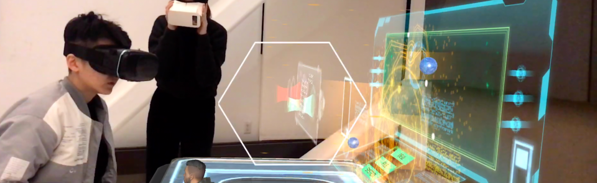
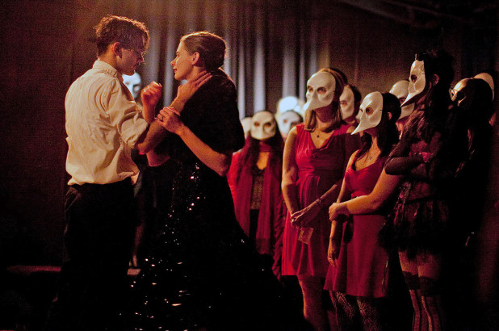
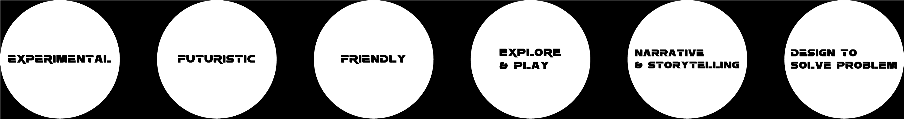
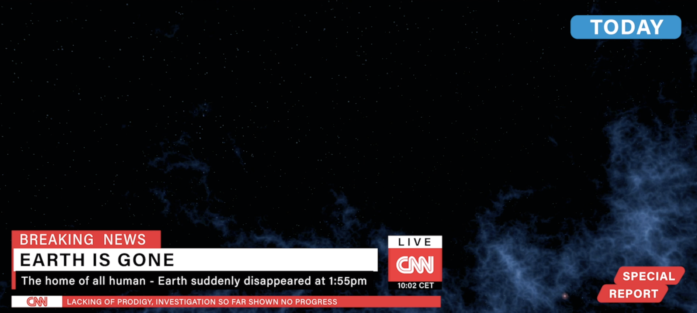
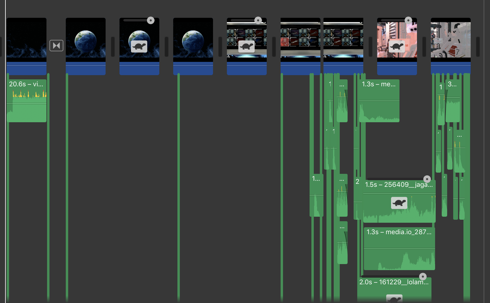
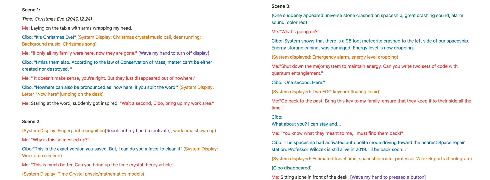
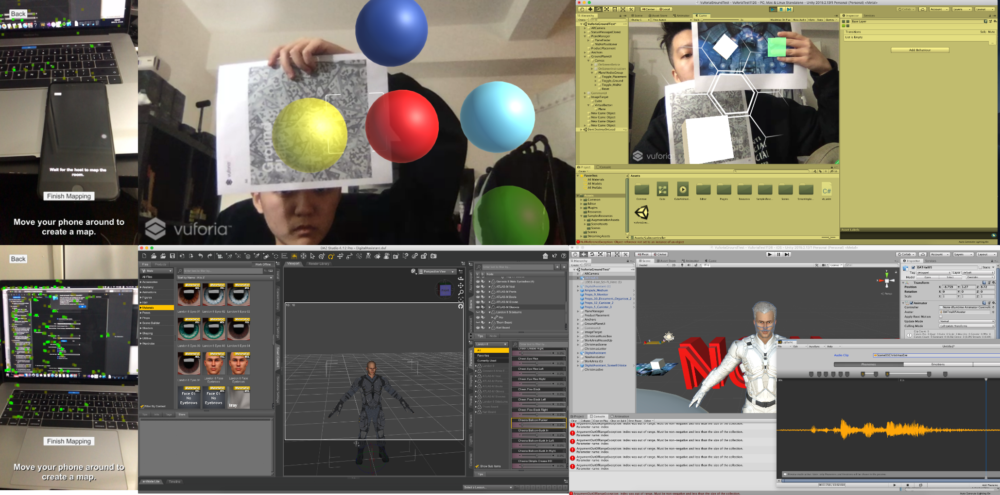
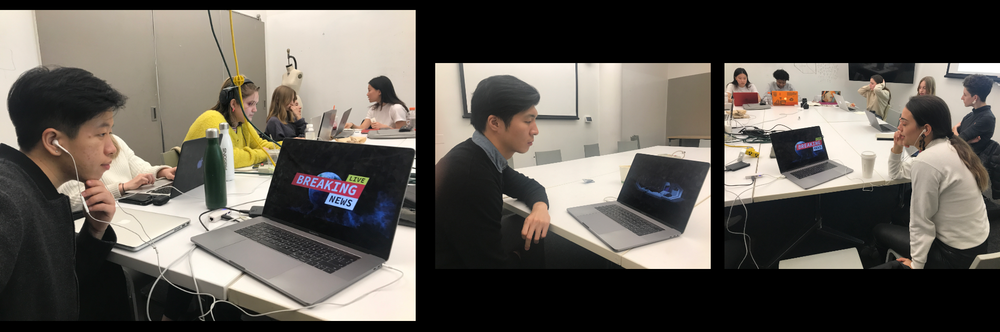

EMERGING TECHNOLOGY II
DIGITAL ASSISTANT
PROJECT DESCRIPTION
Continue developing on the narrative of future digital assistant, I explored a creative way to performance storytelling through spatial augmented reality technology. For now, digital assistant powered by artificial intelligent is still at its early development stage, which has great potential to become a vital role to help human complete future task. The story reflects the interaction between intelligent machine and human in an extreme situation. Though the implementation of plane detection and multi player functionality, virtual components in scenes can be viewed by both actors and audience at the same time.
20190928

RESEARCH & IDEAS
Having the idea of creating an immersive theater narrative, I interviewed Jiaqi Liu, who previously working at Sleep No More in Shanghai and was the president of her college drama club. She introduced Jinghui Meng, a Chinese artist who created experimental theater with technology, where give me a lot of inspiration to combine digital projections and sounds to generate an atmosphere. She also mentioned the inconvenience of physical installation and high possibility of damaged. Learned from the interview, I understand more about the actor/audience perspective and important factors of creating an immersive atmosphere.
#1
PART
BACKGROUND STORY


The final presentation is seperated into two parts but with same background setting, therefore, I started with develop the narrative background:
At the year of 2049, space travel become a common method for people to entertain, and of course, for scientists to explore the secrets of the Universe. Even though there are significant amount of new planets discovered, Earth, is still the only planet that contains life forms — the home of all mankind.
At 2049, November 18th, 1:55 am (Earth time): As a freelance scientist, I was sitting in my spaceship traveling at the corner of Milky Way Galaxy to enjoy the beautiful view of distant stars. Suddenly, there was a great gravity pull that shake the whole spaceship to oscillate. My digital assistants Cibo reported after few seconds, “Earth is gone.” Later, this information appeared on the news, internet, radio, it surprised and terrified all survival human. The home of all mankind disappeared.
Major investigation centers and remain government scientists dispatched their digital assistant to travel through time to the moments before Earth is gone, eager for finding out the cause and backstage manipulator. However, because of the lacking of prodigy, investigations so far barely shows any progress.
At the same time, there are many important spaceship with massive data and experts are disappearing in the universe for unknown reasons and nowhere to be found.
At the year of 2049, space travel become a common method for people to entertain, and of course, for scientists to explore the secrets of the Universe. Even though there are significant amount of new planets discovered, Earth, is still the only planet that contains life forms — the home of all mankind.
At 2049, November 18th, 1:55 am (Earth time): As a freelance scientist, I was sitting in my spaceship traveling at the corner of Milky Way Galaxy to enjoy the beautiful view of distant stars. Suddenly, there was a great gravity pull that shake the whole spaceship to oscillate. My digital assistants Cibo reported after few seconds, “Earth is gone.” Later, this information appeared on the news, internet, radio, it surprised and terrified all survival human. The home of all mankind disappeared.
Major investigation centers and remain government scientists dispatched their digital assistant to travel through time to the moments before Earth is gone, eager for finding out the cause and backstage manipulator. However, because of the lacking of prodigy, investigations so far barely shows any progress.
At the same time, there are many important spaceship with massive data and experts are disappearing in the universe for unknown reasons and nowhere to be found.

#2
AUGMENTED REALITY
IMMERSIVE PERFORMANCE


Second part is also made in Unity, I spend majority of my time to experiment with different SDK and functionalities. Unfortunately, Placenote SDK recently remove spatial capture functionality from current SDK version, therefore I couldn’t use point cloud data and have to find alternative plane detection to place object. I also played with lip Sync plug-in to generate character facial expression. However, model with blend shape data was very big in size which Mixamo has trouble receiving the file. Thus, I decided to go with Vuforia Plane Detection and Mixamo for character animation. I download some prefab models from Unity assets store and connected them with #C script to invoke at the right timing. Then music background and pre-record digital assistant’s voice were added.

Through user testing, I shown them the final video record version and learn many useful feedback. One of them point out details of objects in background story part, and by adding baggages can more clearly show the point of travel. I also got feedback of how to make the report part more realistic and by having dual language – English and Chinese, can make the report sounds more international. Therefore, I asked two of my friends later to add the report voice over.
THE FINAL
Copy the link below to see the video:
https://drive.google.com/file/d/1Ft2KwfV4FjFb8th39IWh0MlpJXDOjjwO/view?usp=sharing
FUTURE IMPROVEMENT